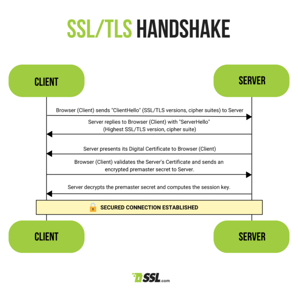

SSL/TLS Protocols
SSL (Secure Sockets Layer) and its successor TLS (Transport
Layer Security) are cryptographic protocols designed to provide
secure communication over a computer network. They are commonly
used to secure data transfer between a web browser and a server,
ensuring the confidentiality and integrity of the exchanged
information.
Key Features of SSL/TLS
-
Encrypts data to protect it from unauthorized access during
transmission.
-
Provides secure authentication of the server and,
optionally, the client.
- Ensures the integrity of the data being exchanged.
-
Supports various cryptographic algorithms for encryption and
authentication.
SSL/TLS Handshake
The SSL/TLS handshake involves the following steps:
-
ClientHello: The client initiates the connection by sending
a hello message.
-
ServerHello: The server responds with its own hello message,
and they agree on cryptographic parameters.
-
Key Exchange: The client and server exchange cryptographic
keys to establish a secure connection.
-
Finished: Both parties confirm that the handshake is
complete, and secure communication begins.
